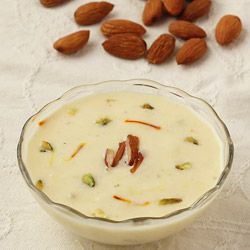

RABRI

Rabri is a sweet, condensed-milk-based dish,
originating from the Indian subcontinent,
made by boiling the milk on low heat for a long time
until it becomes dense and changes its color to pinkish.
Sugar, spices and nuts are added to it to give it flavor.
It is chilled and served as dessert.
NEXT
for contact: